JIJ?
Wij zoeken teamspelers. Gepassioneerd en leergierig. Programmeurs die programmeren. Hackers. Ook in hun vrije tijd. Omdat ze dat leuk vinden. Maar ook mensen die het verschil willen en kunnen maken. Vaklui die gaan voor resultaat, maar niet ten koste van kwaliteit. Pioniers die uit hun comfort zone durven te stappen om nieuwe wegen in te slaan. Functional. Reactive. Full Stack.
Scala
Zie ook dejunior Scala vacature
Programmeer met hart en hoofd
Klantcase: de haven van Rotterdam als greenfield. Met een team van Codestar collega’s maak jij het verschil voor het havenbedrijf op gebied van techniek. Om informatiegolven rond schepen te overzien en realtime datastromen te realiseren. Door te innoveren met functional programming, reactive streams, cloud native en machine learning. Via Scala, Play, Akka, Kafka, Spark, RX, Angular2 en React. Naar de slimste haven ter wereld.
#DaaromBijCodestar
Wij creëren de nieuwe wereld van fast en streaming data. Met schaalbare en reactive apps. Die inspelen op complexe uitdagingen. Door te programmeren. Met ons hart en hoofd. Zo maken wij het verschil. Voor klanten die de volgende stap willen zetten. Vanuit een bedrijfscultuur waarin continuous learning, samenwerken en programmeren centraal staan. Met R&D-dagen, Campus fridays en teamweekenden met internationale topcoaches. Wij zijn het #1-bedrijf voor Full Stack Scala en Fast Data-oplossingen in Nederland.
#WieBenJij?
Wij zoeken teamspelers. Gepassioneerd en leergierig. Die programmeren. Ook in hun vrije tijd. Omdat ze nieuwsgierig zijn. Vaklui die het verschil kunnen maken. Door baanbrekende ideeën leven in te blazen. Die gaan voor resultaat, maar nooit ten koste van kwaliteit. En klanten daarvan kunnen overtuigen. Maar ook fouten durven te maken. Omdat innoveren vallen en opstaan is. Functional. Reactive. Full Stack.
- Hbo-/wo-denkniveau
- Een trackrecord in Scala Development
#DitVerdienJe
We doen er alles aan om jouw groei optimaal te ondersteunen. Zodat je master kunt worden in jouw vakgebied.
- Nieuwste Macbook of Microsoft Surface; bepaal zelf hoe je werkt.
- R&D dagen in Nieuwegein; focus op thema’s waarin jij expert wil worden.
- Campus fridays; werk op kantoor met collega’s die je helpen als je vastloopt én je inspireren met hun projecten en code.
- 1 buitenlandse topconferentie; voor de inspiratie om voorop te lopen.
- 2 Codecamps per jaar met toptrainers; in de woonkamer van een vakantiewoning, omdat we dan zelf bepalen wanneer de cursusdag is afgelopen en de strand-BBQ daarna meteen kan beginnen.
- Vast contract: ons commitment voor jouw groei naar master.
#MeerWeten?
Meer weten over ons Scala-huis? Dat vertellen we graag persoonlijk. Dus als je er voor open staat om ons beter te leren kennen, neem dan deel aan een van onze trainingen of evenementen. Die organiseren we regelmatig en zijn voor iedereen kosteloos toegankelijk. Of maak gewoon een afspraak. Mail gerust onze business unit manager: codestar@ordina.nl
Acquisitie naar aanleiding van deze vacature wordt niet op prijs gesteld.Junior Scala
Zie ook deervaren Scala vacature
Programmeer met hart en hoofd
Klantcase: wij zoeken een Scala-talent voor ons greenfield project in de haven van Rotterdam. Iemand die met collega’s het verschil wil maken bij Rotterdam Logistics Lab - innovatie-incubator van de haven. Door real-time datastromen te realiseren. Met functional programming, reactive streams, cloud native en machine learning. Via Scala, Play, Akka, Kafka, Spark, RX, Angular2 en React. Word jij de nieuwe expert in het Scala-ecosysteem?
#DaaromBijCodestar
Je komt in aanraking met backend stream-processing, leert frontend reactive programmeren én maakt uitstapjes in de wereld van Big Data. Binnen een team dat zich richt op fast en streaming data. Door te programmeren. Met hart en hoofd. Voor klanten die de volgende stap willen zetten. Vanuit een bedrijfscultuur waarin continuous learning, samenwerken en programmeren centraal staan. Met R&D-dagen, Campus fridays en teamweekenden met internationale topcoaches. Sluit je aan bij het #1-bedrijf voor Full Stack Scala en Fast Data-oplossingen in Nederland.
#WieBenJij?
Wij zoeken teamspelers. Gepassioneerd en leergierig. Juniors die programmeren. Ook in hun vrije tijd. Omdat ze nieuwsgierig zijn. Die het verschil willen maken. Door baanbrekende ideeën leven in te blazen. Die gaan voor resultaat, maar nooit ten koste van kwaliteit. En ook fouten durven te maken. Omdat innoveren vallen en opstaan is. Functional. Reactive. Full Stack.
- Wo-denkniveau
- Ervaring met functioneel programmeren, Scala of Haskell
#DitVerdienJe
We doen er alles aan om jouw groei optimaal te ondersteunen. Om master te worden in jouw vakgebied:
- Nieuwste Macbook of Microsoft Surface; bepaal zelf hoe je werkt.
- R&D dagen in Nieuwegein; focus op thema’s waarin jij expert wil worden.
- Campus fridays; werk op kantoor met collega’s die je helpen als je vastloopt én je inspireren met hun projecten en code.
- 1 buitenlandse topconferentie; voor de inspiratie om voorop te lopen.
- 2 Codecamps per jaar met toptrainers; in de woonkamer van een vakantiewoning, omdat we dan zelf bepalen wanneer de cursusdag is afgelopen en de strand-BBQ daarna meteen kan beginnen.
- Vast contract: ons commitment voor jouw groei naar master.
- Mentor; die jou begeleidt in je eerste stappen in het Scala-ecosysteem.
#MeerWeten?
Meer weten over ons Scala-huis? Dat vertellen we graag persoonlijk. Dus als je er voor open staat om ons beter te leren kennen, neem dan deel aan een van onze trainingen of evenementen. Die organiseren we regelmatig en zijn voor iedereen kosteloos toegankelijk. Of maak gewoon een afspraak. Mail gerust onze business unit manager:codestar@ordina.nl
Acquisitie naar aanleiding van deze vacature wordt niet op prijs gesteld.Front-end developer
Programmeer met hart en hoofd
Klantcase: de haven van Rotterdam als greenfield. Met een team van Codestar-collega’s maak jij het verschil voor het havenbedrijf op gebied van Front-end-techniek. Door from scratch een dashboard met reactive elementen te bouwen, waarbij jullie zelf de front-end architectuur bepalen en continuous deployment inrichten. Met Angular, TypeScript, React Native, RxJs en Redux. Naar de slimste haven ter wereld.
#DaaromBijCodestar
JavaScript: sleutel naar single page-applicaties die zich dynamisch aanpassen aan moderne gebruikers. Waarom wij hier succesvol in zijn? Vakinhoudelijke experts in functional reactive programming en slimme samenwerking tussen Front-end Developers, topspelers in Scala, klanten en de rest van het agile team. Zonder formele toestanden. Vanuit een continuous learning-cultuur waarin jouw ontwikkeling centraal staat. Met R&D-dagen, Campus fridays en weekenden met internationale topcoaches. Laten we samen een begrip worden.
#WieBenJij?
Wij zoeken teamspelers die gepassioneerd en leergierig zijn. Proactieve specialisten die zich willen bewijzen in het ontwerpen en bouwen van JavaScript-apps. Die gaan voor resultaat, maar nooit ten koste van kwaliteit. En over goede people skills beschikken. Omdat een dag uit meer bestaat dan programmeren. Innovatie is team effort. Een kwestie van luisteren, doorvragen en samenwerken. Multidisciplinair.
- Hbo-/wo-denkniveau
- Een trackrecord in JavaScript engineering
- Kennis van functional reactive programming en/of MV* frameworks
- Ervaring met TypeScript of andere typed JavaScript-variant (pré)
#DitVerdienJe
We doen er alles aan om jouw groei optimaal te ondersteunen. Zodat je master kunt worden in jouw vakgebied.
- Nieuwste Macbook of Microsoft Surface; bepaal zelf hoe je werkt.
- R&D dagen in Nieuwegein; focus op thema’s waarin jij expert wil worden.
- Campus fridays; werk op kantoor met collega’s die je helpen als je vastloopt én je inspireren met hun projecten en code.
- 1 buitenlandse topconferentie; voor de inspiratie om voorop te lopen.
- 2 Codecamps per jaar met toptrainers; in de woonkamer van een vakantiewoning, omdat we dan zelf bepalen wanneer de cursusdag is afgelopen en de strand-BBQ daarna meteen kan beginnen.
- Vast contract: ons commitment voor jouw groei naar master.
#MeerWeten?
Meer weten over Codestar? Dat vertellen we graag persoonlijk. Dus als je er voor open staat om ons beter te leren kennen, neem dan deel aan een van onze trainingen of evenementen. Die organiseren we regelmatig en zijn voor iedereen kosteloos toegankelijk. Of maak gewoon een afspraak. Mail gerust onze business unit manager: codestar@ordina.nl
Acquisitie naar aanleiding van deze vacature wordt niet op prijs gesteld.
Big Data Engineer
Programmeer met hart en hoofd
Klantcase: Pyeongchang, Zuid-Korea - 2018. De wereld volgt de Olympische Winterspelen. Skiën, schaatsen en bobsleeën; alles wordt online gestreamd. Ook door een groot Amerikaans tv-netwerk. Gracenote- en Codestar-engineers bouwen aan het nieuwe platform om deze livestreams te verrijken met real-time data van tussentijden, fictieve standen, video logs, en biografieën van sporters. Via real-time stream processing-technologieën als Kafka en Akka. Voor een gouden plak in kijkbeleving.
#DaaromBijCodestar
Big, fast & smart data. Wij blinken uit in real-time dataplatforms en reactive apps. Door te programmeren. Met hart en hoofd. In multidisciplinaire, agile teams. Zonder formele toestanden. Gewoon met elkaar, maximaal waarde halen uit big data. Waarom wij daar zó sterk in zijn? Door onze continuous learning-cultuur waarin jouw ontwikkeling centraal staat. Met R&D-dagen, Campus fridays en weekenden met internationale topcoaches. Welkom. Wij zijn het #1-bedrijf voor Full Stack Scala en Fast Data-oplossingen.
#WieBenJij?
Wij zoeken teamspelers. Gepassioneerd en leergierig. Professionals die de verschillende talen in een multidisciplinair team spreken. Die met hun Scala-skills of krachtige Java-background de steeds grotere big data-golven willen bedwingen. En de ambitie hebben om samen met collega’s een real-time datawereld te creëren waar de maatschappij écht iets aan heeft. Fast. Reactive. Stream processing.
- Hbo-/wo-denkniveau
- Polyglot programmeur (Scala, Java, Python, ...)
- Kennis van Spark, Kafka, Hadoop, Cassandra, SQL, ElasticSearch, Airflow
- Ervaring met gedistribueerde systemen, microservices, databases en NoSQL technologieën
#DitVerdienJe
We doen er alles aan om jouw groei optimaal te ondersteunen. Zodat je master kunt worden in jouw vakgebied.
- Nieuwste Macbook of Microsoft Surface; bepaal zelf hoe je werkt.
- R&D dagen in Nieuwegein; focus op thema’s waarin jij expert wil worden.
- Campus fridays; werk op kantoor met collega’s die je helpen als je vastloopt én je inspireren met hun projecten en code.
- 1 buitenlandse topconferentie; voor de inspiratie om voorop te lopen.
- 2 Codecamps per jaar met toptrainers; in de woonkamer van een vakantiewoning, omdat we dan zelf bepalen wanneer de cursusdag is afgelopen en de strand-BBQ daarna meteen kan beginnen.
- Vast contract: ons commitment voor jouw groei naar master.
#MeerWeten?
Meer weten over Codestar? Dat vertellen we graag persoonlijk. Dus als je er voor open staat om ons beter te leren kennen, neem dan deel aan een van onze trainingen of evenementen. Die organiseren we regelmatig en zijn voor iedereen kosteloos toegankelijk. Of maak gewoon een afspraak. Mail gerust onze business unit manager: codestar@ordina.nl
Acquisitie naar aanleiding van deze vacature wordt niet op prijs gesteld.

Videos
Wij
Onze Momenten


Launch Event


Akkathon


Hierom wil jij voor ons programmeren
- Wij durven het hardop te zeggen: wij zijn heel, heel goed
- Hoe we werken, bepalen we zelf
- Wij zijn nooit uitgeleerd
- Wij kennen de onderliggende principes van functioneel programmeren
- Wij kennen de onderliggende principes van object geörienteerd programmeren
- Wij delen onze passie op evenementen en internationale conferenties
Wij programmeren
Wij houden van ons vak: programmeren. Aan het einde van de dag telt alleen de code. Wij schrijven die code. Schone code. Code die werkt. Wij programmeren Scala, maar ook TypeScript. JavaScript en soms Haskell. Wij zijn meertalig en niet bang om nieuwe talen te leren.
Onze keuze
 



De mogelijkheden in de digitale wereld zijn eindeloos. Uitdagingen vaak complex. Wij ontwikkelen moderne software die simpel te gebruiken is. Agile en productief, met gebruik van de nieuwste technieken. Wij programmeren. Met ons hoofd én met ons hart. Voor organisaties die de volgende stap willen zetten.
Wij zijn de #1 partner voor Full Stack Scala en Big Data oplossingen in Nederland. Wij zijn Codestar.
Ik wil programmeren
Ik wil de volgende stap zetten
Tijd om de volgende
stap te zetten
IT is meer dan ooit de drager, bezorger en verrijker van je business. Zonder een excellente digitale infrastructuur loop je al snel achter. Data in overvloed, waar begin je? Als iemand je vroeger om water vroeg, pakte je een emmer en liep je naar de waterput. Tegenwoordig hebben we te maken met een waterval aan data. Succes met je emmer.
Gelukkig is niet alleen de hoeveelheid data gegroeid maar ook de technieken om ermee te werken. Het moderne internet, mobiel gebruik en ‘Internet of Things’ vraagt om meer. Bij werken wij met Scala, Frontend en BigData technologieën aan moderne software waarmee je uitdagingen niet meer uit de weg hoeft te gaan. Of je nu een grotere emmer, meer emmers of gewoon een fatsoenlijke waterleiding nodig hebt, wij kunnen het voor je maken.
werken wij met Scala, Frontend en BigData technologieën aan moderne software waarmee je uitdagingen niet meer uit de weg hoeft te gaan. Of je nu een grotere emmer, meer emmers of gewoon een fatsoenlijke waterleiding nodig hebt, wij kunnen het voor je maken.

Waarom wat wij doen wel werkt

Cases
Over SKG
SKG, Stichting Kerkelijk Geldbeheer, biedt financiële diensten toegespitst op kerken en kerkelijke instellingen. Met SKG Online bieden ze een unieke financiële applicatie voor kerken en kerkelijke instellingen, toegespitst op de taakverdeling en werkwijze binnen zulke organisaties. SKG Online biedt functionaliteit die klanten verwachten, zoals incasso’s, betalen en sparen. Daarnaast kunnen organisaties precies aangeven welke handelingen hun medewerkers wel en niet mogen verrichten binnen het systeem, tot op rekeningniveau. Zo is het mogelijk dat voor grote bedragen een extra digitale handtekening nodig is.
Het huidige verouderde platform is geheel, inclusief hosting en fysieke servers, in house en volledig op maat gemaakt voor SKG. SKG zoekt een nieuw betaalplatform dat apps en moderne devices ondersteunt, snelle livegang van features mogelijk maakt en minder beheerlast met zich meebrengt. CodeStar bouwt voor SKG een nieuw reactive platform dat schaalt en onderhoudbaar is. Het platform is toekomstbestendig dankzij technieken als Microservices, Platform as a Service en Continuous Delivery.
Over het systeem
De backend van het systeem schrijven we in Scala. Het Play! framework legt de basis voor een schaalbaar platform dat grote hoeveelheden traffic aankan. Scala is expressief en maakt het eenvoudig om snel een nauwkeurig data model op te tuigen. Hierdoor hebben we de unieke workflows en business rules van SKG Online zeer compact, leesbaar en onderhoudbaar kunnen opschrijven. Dat betekent minder fouten in de software en sneller ontwikkelen. Een aantal recent ontwikkelde stukken Java-software konden gemakkelijk geïntegreerd worden.
In de frontend behalen we dankzij TypeScript dezelfde voordelen voor robuustheid en ontwikkelsnelheid. Met de nieuwste versie van het Angular framework benutten we de kracht van TypeScript optimaal. Dit breed ondersteunde framework is toekomstbestendig. Met reactive programming kunnen we geavanceerde user interfaces bouwen zonder in te leveren op beheersbaarheid.
Met continuous delivery en de nieuwste container-technieken kunnen we gestroomlijnd, snel en consistent nieuwe functionaliteit opleveren. Zonder enige downtime. Zo kan SKG in de toekomst snel inspelen op verandering.
Technology stack
- Play!
- Slick
- Akka
- Postgres
- Angular 2
- TypeScript
- Docker
- DCOS
- Circle CI
Over Havenbedrijf Rotterdam
De haven van Rotterdam is de grootste van Europa. Voorwaarde om deze positie te behouden en te kunnen blijven groeien is dat de havenpartijen IT-slimmer data met elkaar uitwisselen. Het Rotterdam Logistics Lab helpt hierbij door slimme oplossingen te bedenken en uit te proberen die deze transformatie kunnen versnellen. De betreffende projecten zorgen voor meer efficiëntie en hogere veiligheid doordat event-data van partijen in de haven van Rotterdam slim gecombineerd en verrijkt worden. Deze verrijkingen zijn near realtime en voorspellend.
Rotterdam Logistics Labs is het innovatielab van het Havenbedrijf Rotterdam. Hier brengt HBR snel nieuwe potentiële producten naar de partijen gebruik makend van moderne technologieën. Codestar helpt HBR door deze product initiatieven snel realiteit te maken. Daarbij zijn onze agile en effectieve manier van werken een goede match voor de MVP dynamiek van het innovatielab. En onze uitgebreide kennis van near realtime reactive technieken en voorspellende stream based verwerking passen goed bij de technische uitdagingen van deze projecten.
Technology stacks
- Scala, Play!, Akka, RxScala, Spark, Slick, React native, Heroku en
- Scala, Akka Persistence, Akka Streams, Play, React en Typescript op AWS Elastic Beanstalk en AWS Dynamodb
Over ING
ING: de bank als een IT bedrijf met een bankvergunning. ING wil wereldleider zijn in innovatie op het gebied van financiële technologie en biedt een sfeer die aantrekkelijk is voor ontwikkelaars. Meer dan 300 ontwikkelaars werken aan diverse aspecten van de online presence van ING. Om dit te ondersteunen heeft ING het Spotify agile model en DevOps omarmd, waarmee elk team verantwoordelijk is voor de business en IT kant van een of meerdere applicaties.
Codestar werkt aan ING's online afspraken maken service: de eerste straight-through afspraken maken service voor een bank in Nederland. Klanten, prospects en werknemers kunnen online een afspraak inplannen met een financieel adviseur met de juiste vaardigheden voor een bepaald type afspraken (hypotheken, financieel advies).
Het systeem zorgt voor een significante verbetering van de conversie en daarmee de sales funnel. Dit is een centraal IT project binnen assisted channels (financieel advies bij ING kantoren) dat de technische ruggegraat zal vormen bij toekomstig contact tussen ING en haar klanten en prospects.
Over het systeem
Het systeem integreert met de Exchange agenda's van 1300 adviseurs, vergaderruimtes in 250 kantoren
en andere afspraaksystemen bij de bank. Hiermee wordt nagenoeg real-time beschikbaarheid gevalideerd
en daarmee gezorgd voor de beste klantervaring.
De backend gebruikt Scala, Cassandra en asynchroon-programmeertechnieken om een schaalbaar platform
te creeëren, dat uitgebreid kan worden voor gebruik in andere landen.
ING gelooft sterk in de belofte van gestandaardiseerde component driven development en een universele design language voor front-end development. ING heeft hiervoor web components (Polymer) en Material Design ingezet om een front-end stack op te bouwen die geschikt is voor de komende jaren. De online afspraken maken service maakt deel uit van de wereldwijde ING overgang van AngularJS naar Polymer.
Codestar biedt de full-stack expertise en brede platform kennis om het onderhoud van de online afspraken maken service en de migratie naar het nieuwe platform te realiseren.
Technology stack
- Scala
- Finagle
- Cassandra
- Phantom DSL
- AngularJS
- Polymer


Je e-mail is succesvol verstuurd!
We proberen je zo snel mogelijk te antwoorden, maar geef ons even de tijd om er ook een nuttig antwoord van te maken.
Er is iets misgegaan bij het versturen van je e-mail.
Soms heeft het universum gewoon een nare bui, maar misschien zijn er bepaalde velden niet goed ingevuld?
Contact
Op zoek naar de beste programmeurs? Tijd om de volgende stap te zetten? Je bent op de contactpagina, dus je zou ons moeten kunnen vinden.
| CODESTAR@ORDINA.NL | Stuur een email | |
| +31 30 6637000 | Bel ons | |
| RINGWADE 1, 3439 LM NIEUWEGEIN | Bezoek ons |